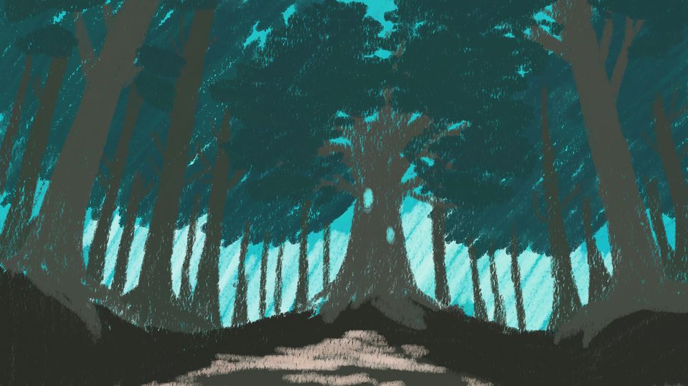
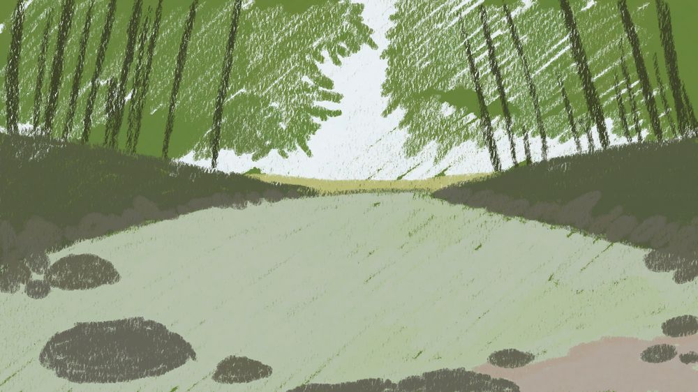

Winter MelonJam 2025
Kira's Mask
敘事 × 小遊戲｜關於身份認同的視覺小說一位被幽靈奪走「容貌」的面具工匠 Kira，透過親手製作三張面具——勇氣、智慧、慈悲——重新理解「我是誰」。每張面具的製作過程，就是一個把該美德轉譯成操作手感的小遊戲。
A主題與核心概念
Jam 主題是「面具」。多數人會往「隱藏自己」去發想，我反過來問：如果失去了臉，面具能不能是「找回自己」的方式？
世界觀設定：山中的古老幽靈因嫉妒人類擁有容貌而奪走人們的臉。結局翻轉——幽靈其實是用這個「殘酷的禮物」逼主角發現：自己從來不只是鏡子裡的那張臉。
設計原則：機制即隱喻。
不讓小遊戲只是「過場的休息」，而是讓玩家用手去「做出」那個美德：砍柴需要果斷（勇氣）、尋石需要觀察與記憶（智慧）、控溫需要耐心與節制（慈悲）。
不讓小遊戲只是「過場的休息」，而是讓玩家用手去「做出」那個美德：砍柴需要果斷（勇氣）、尋石需要觀察與記憶（智慧）、控溫需要耐心與節制（慈悲）。
B遊戲流程
序章失去容貌
→
第 1 章・森林砍柴
→
對話勇氣面具
→
第 2 章・河邊尋石
→
對話智慧面具
→
第 3 章・洞窟控溫熔金
→
對話慈悲面具
→
結局與幽靈和解
敘事與玩法交替出現：每個小遊戲失敗會重來、成功才會推進到面具人格的對話，讓「做出面具」成為解鎖下一段故事的鑰匙。
C三個小遊戲的規則與數值
勇氣砍柴 Wood Cutting

- 物件逐一出現：木頭按空白鍵砍，動物（老鼠）不能砍
- 共 20 個物件，最多失誤 5 次
- 出現間隔隨進度加速：2.0 → 1.5 → 1.2 → 1.0 秒
為什麼：越來越快的節奏逼玩家在猶豫前出手——「果斷」本身就是勇氣。
智慧尋石 Stone Finding

- 3×4 共 12 顆石頭，先展示 5 秒
- 翻回後找出其中 4 顆目標石
- 最多失誤 3 次
為什麼：對應劇本「智慧不是知識，而是理解事物如何運作」——先觀察、再判斷。
慈悲控溫 Temperature
- 按住空白鍵加熱 +20/s，放開降溫 −15/s
- 理想區間 40–60，超出 30 / 70 進入危險
- 在理想區維持累計 10 秒成功，失誤上限 5
為什麼：加熱比降溫快，玩家必須「收手」——慈悲是給予得剛剛好，而不是全部。
D開發心得
三個小遊戲共用同一套框架（血量條＝失誤上限、進度條＝目標完成度、失敗重載場景、成功切換章節），讓我能在 Jam 時限內把時間花在調整手感數值，而不是重寫系統。
對話使用開源對話系統 Flower 撰寫劇本腳本，搭配角色立繪淡入淡出與 BGM 切換；我負責把章節串接成完整流程並發佈 WebGL 版本。